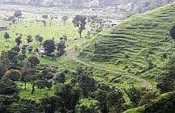
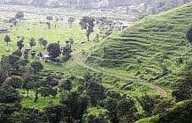
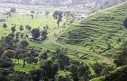

WELCOME TO
KANGRA VALLEY
HISTORY
The Kangra valley is the Trigarta of old, where the Palampur town is situated. It was one of the leading hill states and was once a part of the Jalandhar kingdom. Palampur gets its name from 'Pulum' which means the abundant water. Countless streams and brooks criss-cross the landscape and in their intricate mesh, hold tea gardens and rice paddies. The town of Palampur came into being when Dr. Jameson, Superintendent of Botanical Gardens, introduced the tea bush from Almora in 1849. The bush thrived and so did the town which became a focus of the European tea estate owners. Since then the Kangra tea of Palampur has been known internationally.
The first prime minister of independent India, Pandit Jawahar Lala Nehru visited Palampur in 1941 when it was still British India. There is a Nehru Chowk in Palampur to commemorate this event.
Palampur also known as the 'Tea Capital of North India', is a popular hill station because it is not only known for its scenic beauty but also for the beautiful temples and buildings built in the Colonial period. Here a nature lover can enjoy a quiet stroll while feasting his eyes on the natural beauty and an outdoor lover with a taste for adventure can enjoy hand gliding and trekking during the holiday. It has something for all tastes, which makes it an ideal holiday resort for many. Palampur includes small places like Ghuggar, Aima, Ram chowk, Parour, Arla, Maranda, Rajpur, Bundla, Kandi, Kulani and Chandpur.


 

